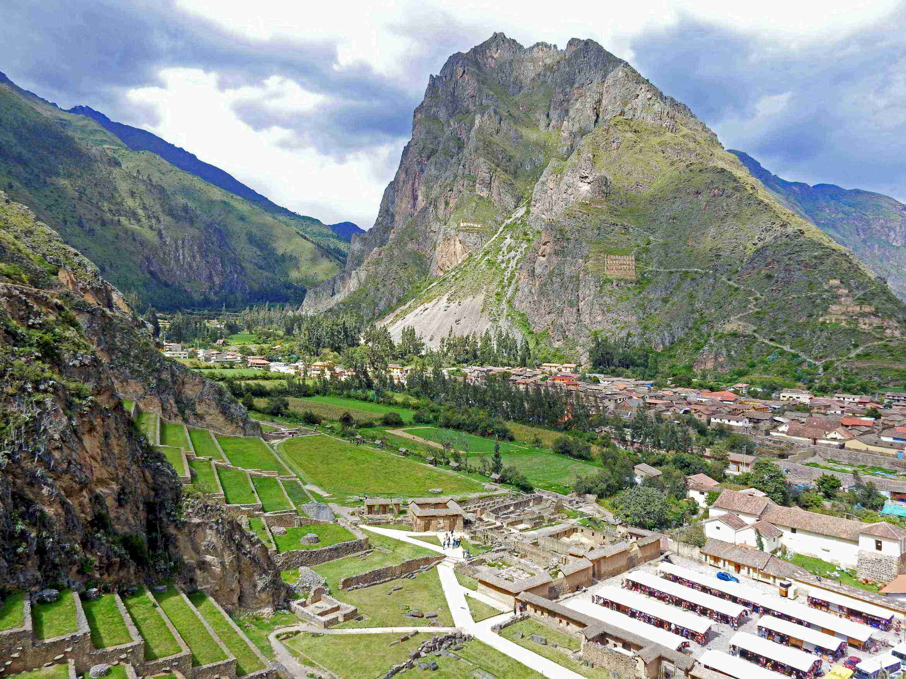

Are you planning a trip to Peru and want a well-balanced adventure? My 7-day itinerary covers the best sights: Machu Picchu, Rainbow Mountain, Huacachina, and the Sacred Valley. Follow along for the ultimate Peru travel guide!
7-Day Peru Itinerary Overview
- Day 1: Arrive in Lima, Fly to Cusco, Travel to Ollantaytambo
- Day 2: Day Trip to Machu Picchu
- Day 3: Sacred Valley to Cusco
- Day 4: 7 Lakes of Ausangate Hike
- Day 5: Rainbow Mountain
- Day 6: Cusco to Lima
- Day 7: Huacachina Day Trip
Best Time to Visit Peru
The best time to visit Peru is between May - October. These months offer clear skies and great hiking weather.
Day 1: Arrive in Lima, Fly to Cusco, Travel to Ollantaytambo
Morning: Arrive in Lima at 6:30 AM and take a flight to Cusco.
Afternoon: Take a scenic drive to Ollantaytambo.
Evening: Explore the Ollantaytambo ruins and enjoy a relaxed evening.
Day 2: Day Trip to Machu Picchu
Morning: Take an early train from Ollantaytambo to Aguas Calientes.
Afternoon: Explore the ruins of Machu Picchu, one of the New 7 Wonders of the World.
Evening: Return to Ollantaytambo by train.

Photo Highlights


Have Questions?
Reach out at your-email@example.com.